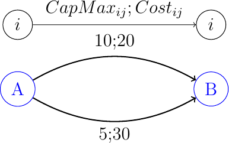

\(\newcommand{\R}{{\mathbb{R}}}\) \(\newcommand{\Z}{{\mathbb{Z}}}\) \(\newcommand{\N}{{\mathbb{N}}}\) \(\newcommand{\var}[1]{{\color{red}{\mathbf{#1}}}}\) \(\newcommand{\param}[1]{{\color{blue}{#1}}}\) \(\newcommand{\mathsc}[1]{{\normalfont\textsc{#1}}}\) \(\def\sc#1{\dosc#1\csod}\) \(\def\dosc#1#2\csod{{\rm{#1{\rm\small #2}}}}\) \(\newcommand{\set}[1]{{\sc#1}}\) \(\newcommand{\mathvar}[1]{\var{#1}}\) \(\newcommand{\mathpar}[1]{\param{#1}}\) \(\newcommand{\half}{{\small{\frac{1}{2}}}}\)
14. Constraints in linear optimization models¶
In this section we are dealing with a few special cases for constraints in optimization models. Of course many classes of constraints have already been introduced and more will come in the next chapters: indeed, constraints are the real essence of optimization models. Here we would like to describe and give some emphasis to a few classes of constraints which might find their use in many situations.
14.1. Soft constraints¶
A generic linear constraint has the form
(or a similar one, but with \(=\) or \(\geq\)). Imposing such a constraint means that any vector \(\bar{\var{x}}\) for which
will be considered infeasible. We can say, in this case, that the constraint is hard, as it cannot be violated.
Sometimes, however, it might be useful to insert a constraint that represents, in a soft way, the desire to keep the constraint satisfied. At the same time, we would like to allow for a moderate constraint violation. This is not the same as relaxing the constraint, e.g., by substituting the right hand side \(\beta\) with another, larger, one. A soft constraint should be something which, if possible and convenient, will provide feasible solutions and only in exceptional cases will generate a solution which is slightly infeasible.
More formally, we would like to consider a vector \(\bar{\var{x}}\) feasible if
In other words, the constraint can be violated, but excessive violations are not allowed. In order to formulate such kind of constraints, we can assign a price to constraint violations. If the original problem is a (linear) minimization one \(\min \sum_j c_j \var{x}_j\), then the introduction of the soft constraint can be done as follows:
This way the constraint can be violated, thanks to the introduction of a non negative surplus variable \(\var{y}\), but the violation causes a cost increase equal to \(K \var{y}\); thus a violation will occur only if the additional cost to be paid is balanced by a stronger overall cost decrease.
For equality constraints, the soft version should allow for violations in both directions. Possibly, violation in the two opposite directions have a different penalty:
A practical case in which it is often useful to insert soft constraints is in production, where some resources are available in a limited quantity, but, paying a penalty, the limits can be overcome (e.g., by buying additional resources from an external provider). A very frequent case is that of overtime: a resource might be available, for example, 40 hours per week; however it is possible, if necessary and up to a given maximum amount, to resort to overtime. Overtime is paid more, usually 50% more, than normal. An example of a soft constraint for this case could be the following:
(taken from section Product Mix Models). Here we see that the use of a resource \(r \in \set{Resources}\) can exceed the available hours thanks the introduction of the soft constraint.
In the objective function we will assign a cost to variable \(\var{Overtime}\):
while, in the constraints, some upper bounds will be introduced in order not to exaggerate in overtime:
The overtime cost must necessarily be higher than the cost which is normally attributed to the same resource, otherwise there would be an incentive not to use the resource during normal hours and instead, use it only during overtime.
14.2. Piece-wise linear convex cost functions¶
The idea we used for the formulation of soft constraints might prove useful in a quite different scenario. In network flow problems, we might wish to formulate a piece-wise linear cost function. Assume that the unit cost of the flow along an arc has a certain value, but only up to a threshold. If the flow exceeds this threshold, the unit cost per each additional unit becomes higher. We can represent this situation with a graph with parallel arcs:

In the example, the flow arriving at node \(A\) will fill the arc with lower unit cost (20) up to the maximum capacity, which is 10 units; any additional unit of flow will go through the second arc, with a unit cost 30. Of course, this modeling trick will work only if unit costs are increasing (and, thus, the overall objective function is piece-wise linear and convex). A model for this situation might be as follows:
This formulation can be further generalized when dealing with piece-wise affine objective functions.

© Fabio Schoen 2024